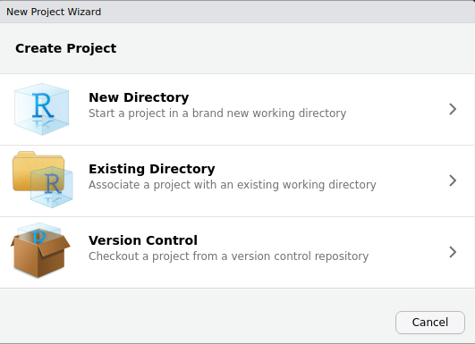
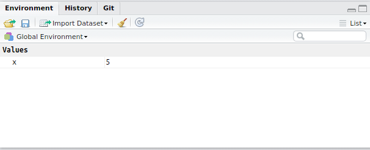

> x <- 5Using RStudio To Write Scripts
ASI: Introduction to R
Dr Stevie Pederson
Black Ochre Data Labs
The Kids Research Institute Australaia
The Kids Research Institute Australaia
September 2, 2025
RStudio
Introduction to RStudio
R and RStudio are two separate but connected things
Ris like the engine of your car
RStudiois the ‘cabin’ we use to control the engine- Comes with extra features not related to
R - Known as an IDE (Integrated Development Environment)
- Comes with extra features not related to
Rdoes all the calculations, manages the data, generates plotsRStudiohelps manage our code, display the plots etc
Some very helpful features of RStudio
- We can write scripts and execute code interactively
- We can see everything we need (directories, plots, code, history etc.)
- Predictive auto-completion
- Integration with Github Co-Pilot
- Integration with other languages
- markdown, \(\LaTeX\), bash, python, C++, git etc.
- Numerous add-ons to simplify larger tasks
- Posit is now developing Positron to better enable a variety of languages
Create an R Project
I use R Projects to manage each analysis
- Create a directory on your computer for today’s material
- We recommend
R_Trainingin your home directory
- We recommend
- Now open
RStudioRStudiowill always open in a directory somewhere- Look in the
Filespane (bottom-right) to see where it’s looking
(Or typegetwd()in the Console pane) - This is the current working directory for
R
Create an R Project
We want RStudio to be looking in our new directory (R_Training)
\(\implies\)R Projects make this easy
File>New Project>Existing Directory- Browse to your
R_Trainingdirectory \(\implies\)Create Project

Create an R Project
- The
R Projectname is always the directory name - Not essential, but good practice and extremely useful
- The Project Menu is in the top-right of RStudio
- Enables us to work on multiple analyses/datasets
- Just open the relevant project \(\implies\) you’re ready to go
Create An Empty R Script
File>New File>R Script- Save As
Introduction.R
RStudio

This is the basic layout we often work with
The R Console
- This is the R Console within the RStudio IDE
- We’ve already explored this briefly
- In the same pane we also have two other tabs
- Terminal: An approximation of a
bashterminal (or PowerShell for Windows) - Background Jobs shows progress when compiling RMarkdown & Quarto \(\implies\) Not super relevant
- Terminal: An approximation of a
The R Environment
Like we did earlier, in the R Console type:
Where have we created the object x?
- Is it on your hard drive somewhere?
- Is it in a file somewhere?
- We have placed
xin ourR Environment - Formally known as your
Global Environment

The R Environment
- The
R Environmentis like your desktop - We keep all our relevant objects here
- Multiple objects are usually created during an analysis
- Can save all the objects in your environment as a single
.RDataobject Rcan be set to automatically save your environment on exit- Unlike Excel: We usually save our code not our environment
The History Tab
- Next to the Environment Tab is the History Tab
- Keeps a record of the last ~200 lines of code
- Very useful for remembering steps during exploration
- Best practice is to enter + execute code from the Script Window
- We can generally ignore the Connections and any other tabs
- A
gittab will also appear for those who use git in their project
- A
Accessing Help
- This will take you to the
HelpTab for thesqrt()function- Contents may look confusing at this point but will become clearer
- Many inbuilt functions are organised into a package called
base- Packages group similar/related functions together
baseis always installed and loaded withR
Additional Sources For Help
- Help pages in
Rcan be hit & miss- Some are excellent and informative \(\implies\) some aren’t
- I regularly read my own help pages
- Bioconductor has a support forum for Bioconductor packages
- https://support.bioconductor.org
- All packages have a vignette (again varying quality)
- Google is your friend \(\implies\) maybe ChatGPT?
The Plots Pane
- We’ve already seen the Files Tab
- Plots appear in the Plots Tab
Cheatsheet and Shortcuts
Help > Cheatsheets > RStudio IDE Cheat Sheet
Page 2 has lots of hints:
Ctrl + 1places focus on the Script WindowCtrl + 2places focus on the ConsoleCtrl + 3places focus on the Help Tab
The Script Window
RStudio: The Script Window
Best practice for analysis is to enter all code in the Script Window
- This is a plain text editor \(\implies\)
RStudiowill:- highlight syntax for us
- help manage indenting
- enable auto-completion (it can be slower than your typing)
- Enter code in your script and send it to the R Console
- We save this file as a record of what we’ve done
- Code is the important object \(\implies\) can recreate all results
RStudio: The Script Window
- We can write comments by starting a line with the
#- Anything following this symbol will not be executed
- Can write notes to ourselves and collaborators
- We can also place this at the end of a line with a comment
- Enter the following in your script
Introduction.Rbut don’t do anything else
RStudio: The Script Window
To send this to the Console:
- Place the cursor on the line with
x <- 1:5thenCtrl+Enter(Cmd+Enteron OSX), or - Select one or more entire lines using the mouse then
Ctrl+Enter(orCmd+Enter) - Or after selecting one or more lines you can click the
Runbutton- Be careful to select all the correct text though
- It’s very easy to miss the first character
RStudio: The Script Window
As well as creating objects, we can write general code
Enter this in your Script Window then send to the Console
RStudio: The Script Window
When we executed length(x) did we create a new object?
No, we just called the function length() and executed it on x
The output of the function was simply printed to the console
Vectors
Vectors
- The object
xis avector\(\implies\) fundamental structure inR- Like a single column in a spreadsheet
- In
Rwhen we pass avectorto a function, the entire vector is evaluated- No need to select a column from your spreadsheet
Add the following to your script
Notice we have a value returned for each element of x
Vectors
- Enter the following in your script with your own comments
- Execute in the Console
- Some will return 5 values, others will be single values
Discuss what you think the values mean as you write your comments
Vectors
xclearly contains numbers (i.e. integers)- Can be checked using
typeof(x) - A vector only contains one type of value
- Can be checked using
- Vectors can also contain characters
- We cannot perform calculations on these vectors
- Some functions do work though
Vectors
- Enter the following in your script then execute
Subsetting Vectors
- We can subset vectors using square brackets
[]
Vector Types
R has 6 types of atomic vectors \(\implies\) only 4 are commonly used
logical: Can only containTRUEorFALSE- Are binary (i.e. single-bit) values
integer: Only contains whole numbers- 32 bit upper limit
numeric: Contains numbers with decimal points (akadoubles)- Larger memory requirements than integers
character
Examples
A logical vector is returned by a logical test
Coercion
- Vectors can be coerced to other types
Advanced Subsetting
- We could use our results from the logical test to subset
x
Creating Vectors
- Normally to create vectors we use
c()- Stands for combine (i.e. we combine vectors)
- Is an empty vector (i.e. NULL) by default
Creating Vectors
- Add your own comments to describe the following
Conclusion
- Make sure you save the file
Introduction.R - This is now a complete R Script
- Can be re-run at any time in the same order
- Will always produce identical results
- We’ve also (accidentally) learned about vectors
- Will be super helpful for the rest of the workshop
- Also the most fundamental structure in
R